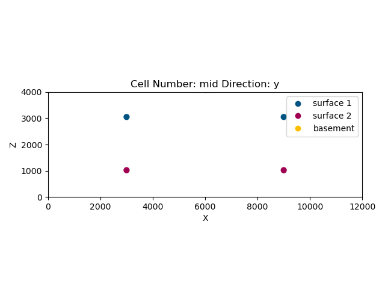
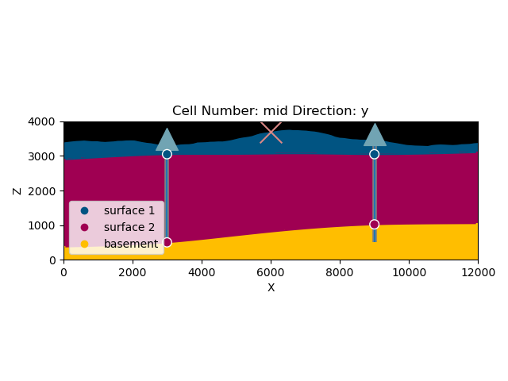
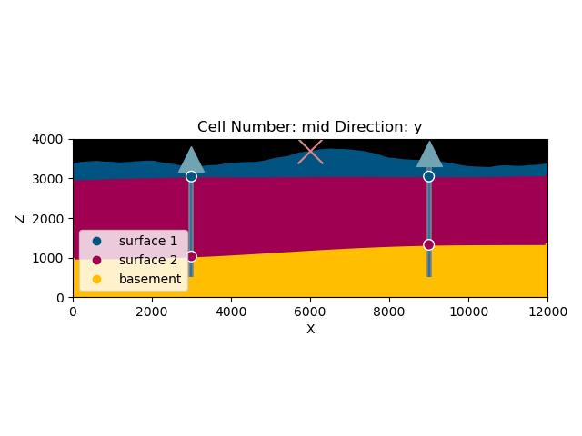

Note
Click here to download the full example code
5.1 - Probabilistic Modeling: Error Propagation¶
In this example we will show how easy we can propagate uncertainty from GemPy parameters to final structural models.
import sys, os
sys.path.append("../../gempy")
os.environ["THEANO_FLAGS"] = "mode=FAST_RUN,device=cuda"
import gempy as gp
from gempy.bayesian.fields import compute_prob, calculate_ie_masked
import numpy as np
import matplotlib.pyplot as plt
np.random.seed(1234)
Model definition¶
In the previous example we assume constant thickness to be able to reduce the problem to one dimension. This keeps the probabilistic model fairly simple since we do not need to deel with complex geometric structures. Unfortunaly, geology is all about dealing with complex three dimensional structures. In the moment data spread across the physical space, the probabilistic model will have to expand to relate data from different locations. In other words, the model will need to include either interpolations, regressions or some other sort of spatial functions. In this paper, we use an advance universal co-kriging interpolator. Further implications of using this method will be discuss below but for this lets treat is a simple spatial interpolation in order to keep the focus on the constraction of the probabilistic model.
geo_model = gp.create_model('2-layers')
gp.init_data(geo_model, extent=[0, 12e3, -2e3, 2e3, 0, 4e3], resolution=[100, 10, 200])
Out:
Active grids: ['regular']
2-layers 2020-12-07 13:09
geo_model.add_surfaces('surface 1')
geo_model.add_surfaces('surface 2')
geo_model.add_surfaces('basement')
dz = geo_model._grid.regular_grid.dz
geo_model.add_surface_values([dz, 0, 0], ['dz'])
geo_model.add_surface_values(np.array([2.6, 2.4, 3.2]), ['density'])
| surface | series | order_surfaces | color | id | dz | density | |
|---|---|---|---|---|---|---|---|
| 0 | surface 1 | Default series | 1 | #015482 | 1 | 20.00 | 2.60 |
| 1 | surface 2 | Default series | 2 | #9f0052 | 2 | 0.00 | 2.40 |
| 2 | basement | Default series | 3 | #ffbe00 | 3 | 0.00 | 3.20 |
geo_model.add_surface_points(3e3, 0, 3.05e3, 'surface 1')
geo_model.add_surface_points(9e3, 0, 3.05e3, 'surface 1')
geo_model.add_surface_points(3e3, 0, 1.02e3, 'surface 2')
geo_model.add_surface_points(9e3, 0, 1.02e3, 'surface 2')
geo_model.add_orientations(6e3, 0, 4e3, 'surface 1', [0, 0, 1])
| X | Y | Z | G_x | G_y | G_z | smooth | surface | |
|---|---|---|---|---|---|---|---|---|
| 0 | 6000.0 | 0.0 | 4000.0 | 0.0 | 0.0 | 1.0 | 0.01 | surface 1 |

Adding topography¶
Out:
[3200. 4000.]
Active grids: ['regular' 'topography']
Grid Object. Values:
array([[ 6.00000000e+01, -1.80000000e+03, 1.00000000e+01],
[ 6.00000000e+01, -1.80000000e+03, 3.00000000e+01],
[ 6.00000000e+01, -1.80000000e+03, 5.00000000e+01],
...,
[ 1.20000000e+04, 1.11111111e+03, 3.38961579e+03],
[ 1.20000000e+04, 1.55555556e+03, 3.40343266e+03],
[ 1.20000000e+04, 2.00000000e+03, 3.41755449e+03]])
Setting up our area¶
Lets imagine we have two boreholes and 1 gravity device. From the boreholes we can estimate the location of the interfaces of our layers. That will be enough to create the first model.
def plot_geo_setting():
device_loc = np.array([[6e3, 0, 3700]])
p2d = gp.plot_2d(geo_model, show_topography=True)
well_1 = 3.5e3
well_2 = 3.62e3
p2d.axes[0].scatter([3e3], [well_1], marker='^', s=400, c='#71a4b3', zorder=10)
p2d.axes[0].scatter([9e3], [well_2], marker='^', s=400, c='#71a4b3', zorder=10)
p2d.axes[0].scatter(device_loc[:, 0], device_loc[:, 2], marker='x', s=400, c='#DA8886', zorder=10)
p2d.axes[0].vlines(3e3, .5e3, well_1, linewidth=4, color='gray')
p2d.axes[0].vlines(9e3, .5e3, well_2, linewidth=4, color='gray')
p2d.axes[0].vlines(3e3, .5e3, well_1)
p2d.axes[0].vlines(9e3, .5e3, well_2)
plt.savefig('model.svg')
plt.show()
plot_geo_setting()
Computing model¶
gp.set_interpolator(geo_model)
Out:
Setting kriging parameters to their default values.
Compiling theano function...
Level of Optimization: fast_compile
Device: cpu
Precision: float64
Number of faults: 0
Compilation Done!
Kriging values:
values
range 1.3e+04
$C_o$ 4.2e+06
drift equations [3]
<gempy.core.interpolator.InterpolatorModel object at 0x7f01c6ab4a60>
gp.compute_model(geo_model)
plot_geo_setting()
Adding Random variables¶
Although that can work as a good approximation, the truth is that modelling hundreds of meters underground is not specially precise. That’s why in many cases we would like to model our input data as probability distributions instead deterministic values. GemPy is specially efficiency for these type of tasks:
geo_model.modify_surface_points(2, Z=500)
gp.compute_model(geo_model)
plot_geo_setting()
Z = np.random.normal(1000, 500, size=2)
geo_model.modify_surface_points([2, 3], Z=Z)
gp.compute_model(geo_model)
plot_geo_setting()
- 
- 
Now we just sample from a random variable and loop it as much as we want:
lith_blocks = np.array([])
n_iterations = 50
for i in range(n_iterations):
Z = np.random.normal(1000, 500, size=2)
geo_model.modify_surface_points([2, 3], Z=Z)
gp.compute_model(geo_model)
lith_blocks = np.append(lith_blocks, geo_model.solutions.lith_block)
lith_blocks = lith_blocks.reshape(n_iterations, -1)
prob_block = compute_prob(lith_blocks)
p2dp = gp.plot_2d(geo_model,
show_lith=False, show_boundaries=False, show_data=False,
regular_grid=prob_block[2],
kwargs_regular_grid={'cmap': 'viridis',
'norm': None}
)
plt.show()
entropy_block = calculate_ie_masked(prob_block)
sphinx_gallery_thumbnail_number = 6
p2dp = gp.plot_2d(geo_model,
show_lith=False, show_boundaries=False, show_data=False,
regular_grid=entropy_block,
kwargs_regular_grid={'cmap': 'viridis',
'norm': None}
)
Total running time of the script: ( 0 minutes 16.718 seconds)